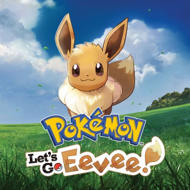

Eevee nos Jogos Pokémon
Eevee está presente em quase todos os jogos da franquia Pokémon desde 1996. Ela aparece como Pokémon obtenível em Red e Blue, Gold e Silver, Diamond e Pearl, X e Y, Sword e Shield e Scarlet e Violet.
Porém, existe um jogo onde Eevee não é apenas mais um Pokémon — ela é a estrela principal!
Pokémon: Let's Go, Eevee! (2018)
O jogo em que a Eevee é a protagonista.

Lançado em 2018 para o Nintendo Switch, Pokémon Let's Go, Eevee! é um remake de Pokémon Yellow ambientado em Kanto. A grande diferença é que a Eevee assume o papel de parceira do jogador desde o início da aventura.
O que torna esse jogo especial?
Seis diferenças em relação aos outros jogos.
- A Eevee fica no seu ombro durante toda a aventura
- Ela não pode evoluir neste jogo
- Possui golpes exclusivos que nenhuma outra Eevee aprende
- Pode usar acessórios e ter o pelo customizado
- Tem expressões e reações únicas ao longo da história
- É possível fazer carinho nela a qualquer momento
Golpes Exclusivos da Eevee Parceira
Quatro golpes que só a parceira aprende.
-
Florzinha Encantada
Fada
Golpe poderoso que pode confundir o adversário
-
Raio Eletrizante
Elétrico
Ataque elétrico exclusivo da parceira
-
Chamas Ardentes
Fogo
Golpe de fogo que pode queimar o adversário
-
Vendaval Aquático
Água
Jato d'água poderoso exclusivo da parceira